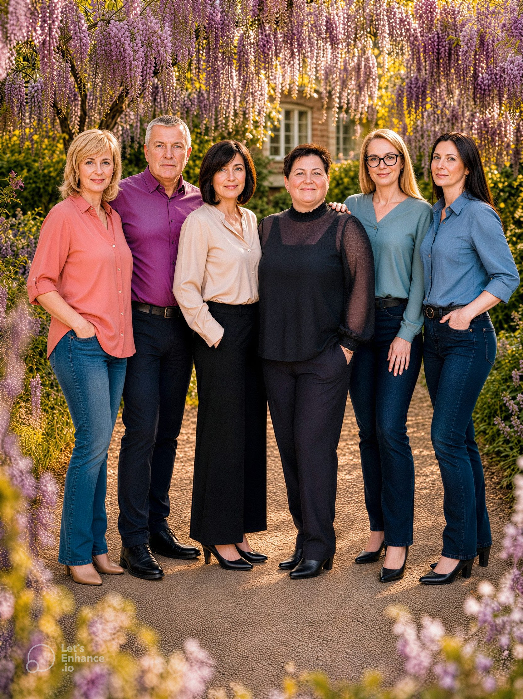

Erfahrung und Fürsorge
seit 2013
Seit 2013 versorgen wir Menschen mit schweren Erkrankungen — professionell, menschlich und verlässlich.
Unser Leitbild
Woran wir uns orientieren
Lebensprozesse unterstützen
Wir fördern die Eigenständigkeit und begleiten natürliche Prozesse.
Körperfunktionen erhalten
Gezielte Pflege zur Erhaltung physischer Fähigkeiten.
Krankheit bewältigen
Monitoring des Krankheitsverlaufs und sofortige Intervention.
Wohlbefinden fördern
Das emotionale und physische Wohlbefinden des Patienten steht im Mittelpunkt.
Komplikationen vorbeugen
Präventive Maßnahmen und lückenlose Überwachung.

Unsere Geschichte
Aus Überzeugung gegründet
Der ambulante Intensivpflegedienst KSK Farmos GmbH & Co. KG wurde 2013 von Viktor Beresnev in Volkmarsen gegründet — mit einem klaren Ziel: Menschen mit schweren Erkrankungen ein würdiges und selbstbestimmtes Leben zu ermöglichen.
Unser Team
Die Menschen hinter KSK Farmos GmbH & Co. KG

Kooperationen
Wir kooperieren eng mit:
- Fachärzten verschiedener Disziplin
- Physiotherapeuten
- Logopäden
- Ergotherapeuten
- Medizintechnik-Unternehmen
- Kranken-, Pflege- und Sozialkassen
- Sanitätshäuser
Kostenlose Beratung
Wir beraten Sie persönlich — kostenlos und unverbindlich.
Lassen Sie uns sprechen